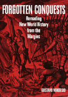

<body bgcolor="#FFFFFF" text="#000000" link="#0000FF" vlink="#CC0000" alink="#CC0000"><center><hr width="350" size="1" align="center" noshade>Re-reading Uruguay's colonial history<hr width="350" size="1" align="center" noshade><p><a href="https://cdcshoppingcart.uchicago.edu/Cart/ChicagoBook.aspx?ISBN=9781566398336&&PRESS=temple" target="_top">Buy this book!</a> | <a href="https://cdcshoppingcart.uchicago.edu/Cart/Cart.aspx?PRESS=temple" target="_top">View Cart</a> | <a href="https://cdcshoppingcart.uchicago.edu/Cart/Cart.aspx?PRESS=temple" target="_top">Check Out</a></p><p></p></center><!--none//--><h1>Forgotten Conquests</h1>
<H2>Rereading New World History from the Margins</H2>
<h3>Gustavo Verdesio</h3>
<P>cloth 1-56639-833-9 $90.50, Feb 01, <FONT COLOR=#990033>Available</FONT>
<br>paper 1-56639-834-7 $32.95, Feb 01, <FONT COLOR=#990033>Available</FONT>
<br>Electronic Book 1-43990-778-1 $32.95 <FONT COLOR=#990033>Available</FONT>
<BR> 216 pp
7x10
1&nbsp;map(s) 2&nbsp;figures 3&nbsp;halftones
</P><BLOCKQUOTE><I>"This is a richly documented study of a much neglected period in the history of the River Plate. Verdesio's work brings forth a new field of inquiry&#151the Amerindian occupation of the territory that is now Uruguay. It offers a provocative and timely critical view of Uruguay's historiography."</I>
<br>&#151<b>Sara Castro-Klaren</b>, Professor of Latin American Culture and Literature at The Johns Hopkins University<I></I></BLOCKQUOTE>
<p>Borrowing from the old adage, we might say that to the victor belongs the history. One of the privileges gained in colonizing the New World was the power to tell the definitive stories of the struggle. The heroic texts depicting the discovery of territories, early encounters with indigenous peoples, and the ultimate subjection of land and cultures to European nation-states all but erase the vanquished. In <I>Forgotten Conquests</I>, Gustavo Verdesio argues that these master narratives represent only one of many possible histories and suggests a way of reading them to find the colonial subjects who did not produce documents.
<p>Verdesio reads the key texts relating to the struggles for possession of River Plate's northern shore&#151present-day Uruguay. He probes them for traces of conflicts in meaning and the agency of Amerindians, <I>gauchos</I>, Africans, and women&#151the subjected peoples that the texts try to silence. The narrators, speaking for their culture, assume the role of knowing subject, repressing all other voices, epistemologies, and acts of resistance. Verdesio's tasks are to listen for those that the Europeans represented as an unintelligible Other, to draw them into the foreground, and to de-colonize their histories.
<p>By unpacking these texts, Verdesio shows that from the European point of view, the colonial encounter draws the New World into historical time and ushers in a new concept of knowledge. For the first time, the historian's role is to discover, to interpret eye-witness testimonies and first-hand experience, to write "a new history of admirable things." Even in this reconstruction of historical truth, Old World ideology drives the narratives, whose chief purpose is to justify conquest. <I>Forgotten Conquests</I> lays bare the discursive strategies that generated the founding texts of Latin American history and engulfed its subjected peoples in silence for 500 years.
<BR>&nbsp;<h2>Reviews</h2>
<p><I>"[A] persuasive deconstruction of European narratives in neglected colonial texts about a southeastern region of South America identified today with Uruguay. Traces of Indian, African, gaucho and women voices constitute a 'polyphonic totality' that thwarts original colonialist interpretations of three centuries of textual production."</I>
<br>&#151<b>Alvaro Félix Bolaños</b>, Department of Romance Languages and Literatures, University of Florida
<BR>&nbsp;<h2>Contents</h2><P>
<p>Preface
<br>Introduction
<br>1. The Entrance to Historical Time
<br>2. Years of Disappointment, or the Long European Siesta
<br>3. The Pacific Penetration
<br>4. Empires in Conflict
<br>5. The Encyclopedias
<br>6. The Tentative Gaze of the Traveler
<br>Conclusion: The Territory as the Stage for the Drama of Difference
<br>Notes
<br>Bibliography
<br>Index
</P><BR>&nbsp;<H2>About the Author(s)</H2>
<table><tr><td valign="top"><img src="/tempress/authors/1554_au.gif" height="90" width="75"></td><td width="100%" valign="middle"><p><B>Gustavo Verdesio</B> is Assistant Professor of Spanish, Department of Romance Languages and Literatures, University of Michigan.</P></td></tr></table>
<BR><H2>Subject Categories</H2>
<p><A HREF="/tempress/latin.html" TARGET="_top">Latin American/Caribbean Studies</a>
<BR><A HREF="/tempress/history.html" TARGET="_top">History</a>
</p>
<p align="center"><a href="https://cdcshoppingcart.uchicago.edu/Cart/ChicagoBook.aspx?ISBN=9781566398336&&PRESS=temple" target="_top">Buy this book!</a> | <a href="https://cdcshoppingcart.uchicago.edu/Cart/Cart.aspx?PRESS=temple" target="_top">View Cart</a> | <a href="https://cdcshoppingcart.uchicago.edu/Cart/Cart.aspx?PRESS=temple" target="_top">Check Out</a></p><p><font face="Arial" size="1"><a href="copyright.html" onMouseOver="window.status='Web Copyright Policy';return true;" onMouseOut="window.status=''" title="Web Copyright Policy">&copy;</a> 2015 <a href="http://www.temple.edu" target="new" onMouseOver="window.status='Link to Temple University home page';return true;" onMouseOut="window.status=''" title="Link to Temple University home page">Temple University</a>. All Rights Reserved. http://www.temple.edu/tempress/titles/1554_reg.html</font></p>